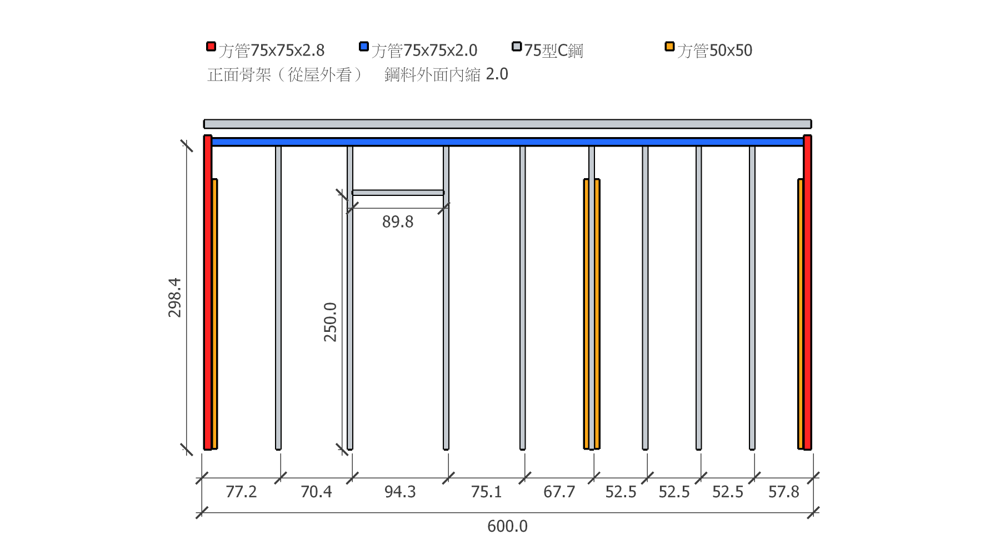
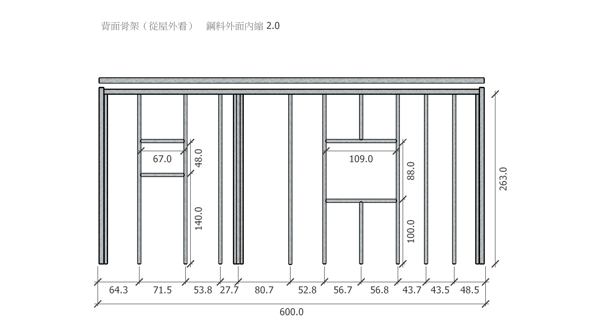
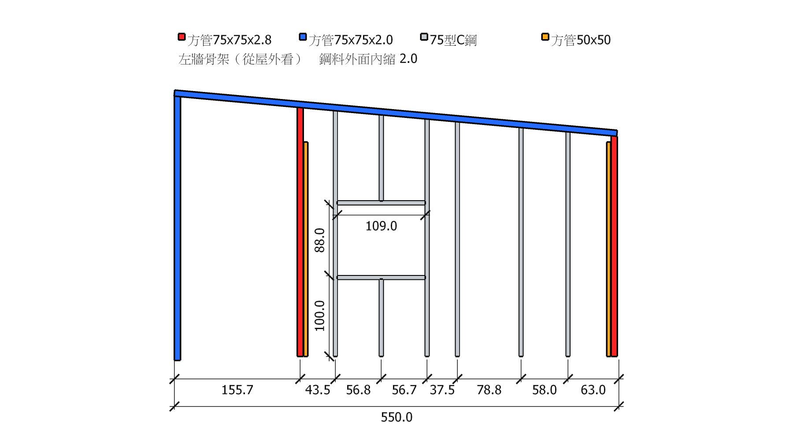
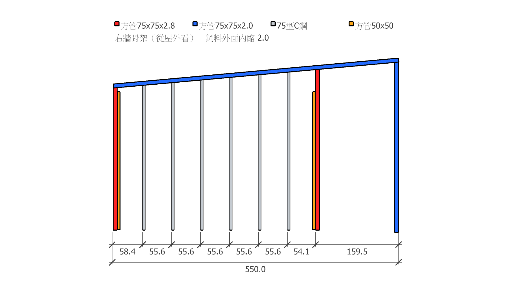
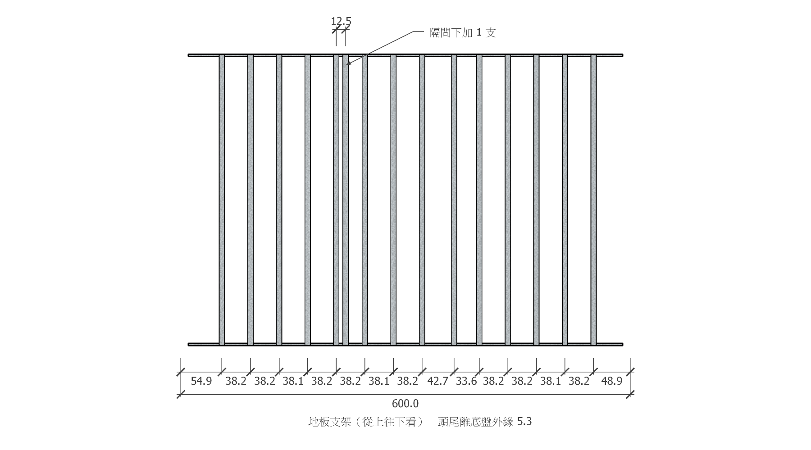
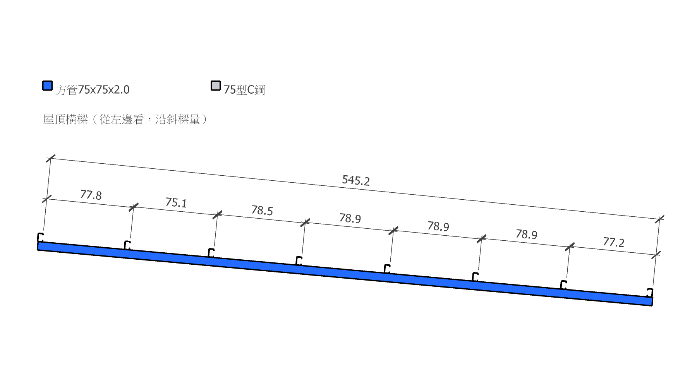
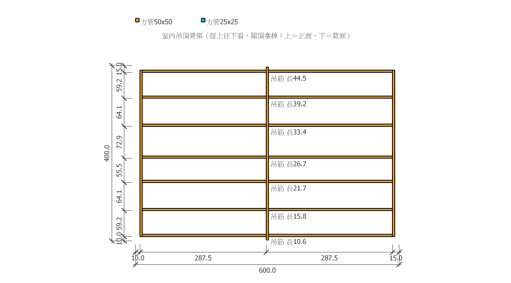
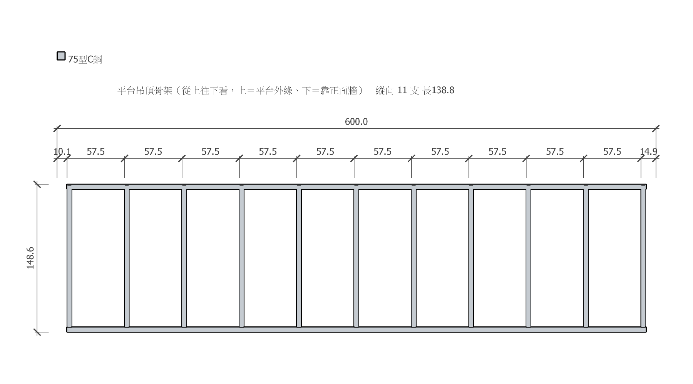

尺寸單位公分。間距一律量料的邊（外徑），不是中心：從底盤外緣起，每支都量到同一邊的料邊，捲尺一路拉、在料邊做記號；牆骨架鋼料外面離底盤外緣內縮 2。門窗標的是淨洞口。料依顏色分：紅＝方管75x75x2.8、藍＝方管75x75x2.0、灰＝75型C鋼、橘＝方管50x50、綠＝方管30x30、紫＝150型C鋼。點圖可以放大看。








柱旁的 5x5 補強貼著柱子，圖上不另外拉尺寸。